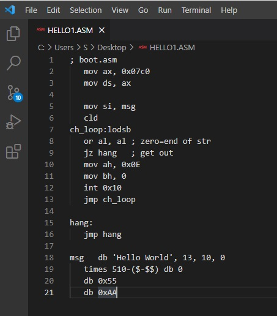
Далі необхідно зберегти ти скомпілювати нашу програму. Компілювання це
перетворення програми в машиний код. Для компілювання будемо
використовувати nasm з командного рядка. В Windows у пошуку введемо
"cmd" без лапок. Відкриваємо консоль. Вона матиме приблизно наступний
вигляд.
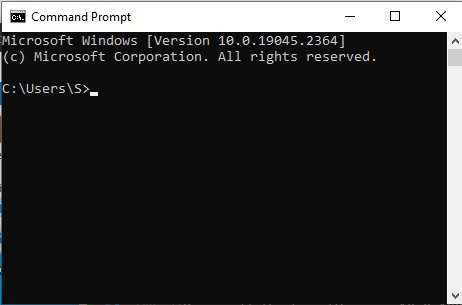
Наступним кроком буде перейти, в консолі, до каталогу де знаходиться
наш файл HELLO1.ASM. Для зміни каталогу, в консолі, використовуємо
команду cd.
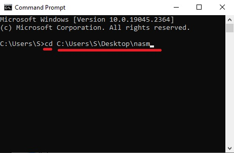
Натискаємо Enter та опиняємося в потрібному каталозі.
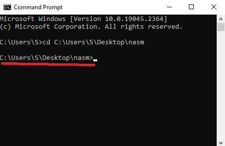
В даному каталозі повинен знаходитися nasm компілятор. Його вигляд
приблизно такий.
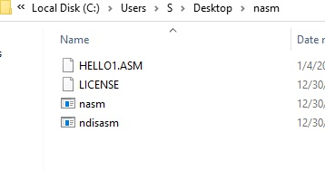
Для компілювання вводимо наступну команду "nasm hello1.asm" без лапок.
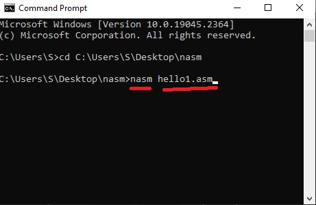
Натискаємо Enter. Після чого отримуємо двійковий файл в машиному коді.
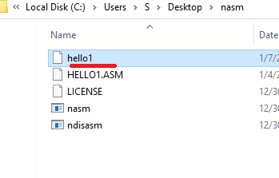
Щоб відкрити цей файл в Visual Studio Code необхідно встановити
розширення HexEditor.
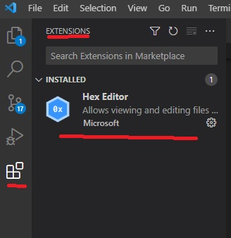
Далі права кнопка миші. Open with Code.
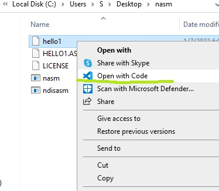
Попередження.
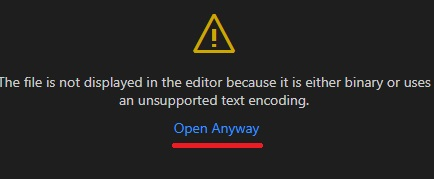
Якщо не зявляється HexEditor декілька разів натискаємо Попередження.
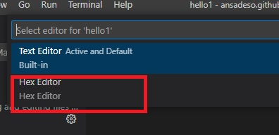
В результаті отримуємо вигляд програми в двійковому коді.
Точніше в шістнадцятковому.
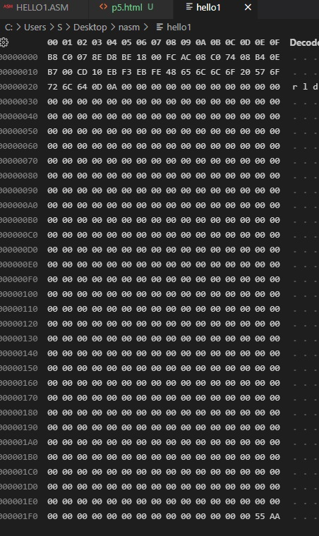